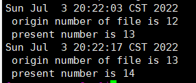

自定义一个systemd服务定时去其他服务器上检查/tmp/下文件的个数，如果发现数量有变化就记录变化情况到文件中。
unit 格式说明：以 “#” 开头的行后面的内容会被认为是注释
相关布尔值，1、yes、on、true 都是开启，0、no、off、false 都是关闭
时间单位默认是秒，所以要用毫秒（ms）分钟（m）等须显式说明
service unit file文件通常由三部分组成：
[Unit]：定义与Unit类型无关的通用选项；用于提供unit的描述信息、unit行为及依赖关系等
[Service]：与特定类型相关的专用选项；此处为Service类型
[Install]：定义由“systemctl enable”以及”systemctl disable“命令在实现服务启用或禁用时用到的一些选项
建立服务文件
| #按上述格式编写自定义服务
[root@centos8 ~]$vim /etc/systemd/system/checkfile.service
[Unit]
Description=Regularly check the number of files under /tmp/ on other servers. If the number changes, record the changes in the file.
[Service]
Type=simple
ExecStart=/root/checkfiles.sh
User=root
[Install]
WantedBy=multi-user.target
|
编写脚本
1
2
3
4
5
6
7
8
9
10
11
12
13
14
15
16
17
18
19
20
21
22
23
24
25
| #查看其它服务器需要远程登录，使用expect处理交互式操作。
#将读取的文件数量存入filenum文件，filenum2文件保存当前值，当数值变化时，记录变化情况到tmpfilenum,同时将变化后的值记录为当前值
#定时2小时检查一次
#!/bin/bash
while true;do
{
expect <<EOF
set timeout 60
spawn ssh 10.0.0.152 "ls -al /tmp | wc -l"
expect {
"yes/no" { send "yes\n";exp_continue }
"password" { send "passwd\n" }
}
expect eof
EOF
} > /root/filenum.log
cat /root/filenum.log |tail -1 >> filenum2.log
num=`cat /root/filenum.log |tail -1`
num2=`cat /root/filenum2.log |head -1`
if [ $num != $num2 ];then
cat /root/filenum.log |tail -1 > filenum2.log
echo -e "`date`\n origin number of file is $num2 \n present number is $num " >> /root/tmpfilenum.log
fi
sleep 7200s
done
|
模拟效果如下
服务器增加文件
1
2
3
4
5
| [root@localhost /tmp]$touch 1
[root@centos8 ~]$bash checkfiles.sh
[root@localhost /tmp]$touch 2
[root@centos8 ~]$bash checkfiles.sh
[root@centos8 ~]$cat tmpfilenum.log
|

启动服务
1
2
| [root@centos8 ~]$systemctl daemon-reload
[root@centos8 ~]$systemctl enable --now checkfile.service
|